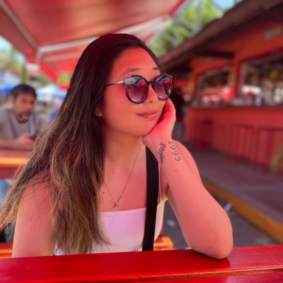

Sobre mim
Fiz transição de Carreira do Direito para a Tecnologia, sou formada pela Unesp e pós graduada pela EPD, atuei como advogada civil e trabalhista, mas quando conheci outras mulheres em transição de carreira descobri novas possibilidades e percebi que poderia atuar em uma área que sempre me interessei e na qual poderia trabalhar com muito mais motivação.
Sou curiosa, amo viajar e aprender coisas novas, como línguas, falo inglês, espanhol e ja me aventurei a aprender coreano e japonês por conta própria. Moro na capital de São Paulo, tenho dois gatos e algumas plantas!